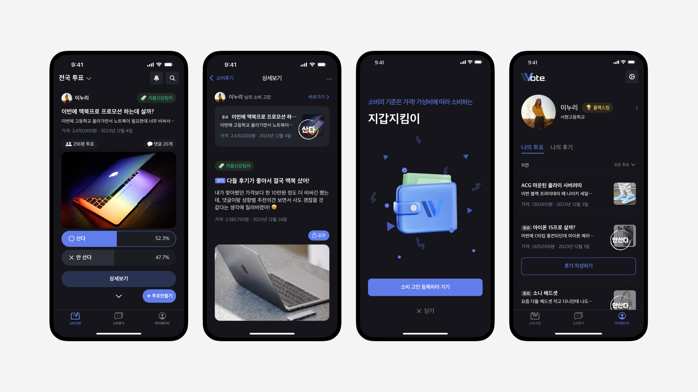

Apple Developer Academy에서 9개월 동안 교육을 받으며, 개발 과정에 대한 심도 있는 이해를 위해 의도적으로 디자인과는 거리를 두고 온전히 개발자의 시각에서 iOS 개발을 공부했습니다. 이 기간 동안 총 4번의 팀 프로젝트를 수행하며 모든 프로젝트에서 iOS 개발을 담당했고, 총 2개의 앱을 앱 스토어에 출시했습니다.
Wote - 청소년들의 소비 고민을 도와주는 투표 커뮤니티 앱
청소년들이 또래 친구들과 함께 소비 고민을 나누어 합리적인 소비를 할 수 있도록 돕고, 타인의 소비 성향을 확인하며 본인의 소비 가치관을 확립할 수 있는 커뮤니티 플랫폼 앱의 프론트 개발을 맡아 진행했습니다. 백엔드 팀과 협업하며 다양한 데이터 통신을 처리하는 경험을 할 수 있었습니다.
Apple 로그인을 구현하고 키체인을 활용하여 사용자 JWT(JSON Web Tokens)를 관리했습니다.
Alamofire와 Moya, Combine을 활용하여 서버 통신에 필요한 API Manager를 만들고 케이스 별로 관리했습니다.
백엔드 팀과 협업하며 각각의 API를 뷰에 연결하고, 데이터를 중심으로 아키텍처 구조를 설계했습니다.
커스텀 이미지 크롭 기능(확대/축소, 이동, 회전, 크롭)을 구현했습니다.
각각의 뷰들을 구현하고 연산 프로퍼티, 메소드, 구조체 등으로 분리하여 가독성과 재사용성을 향상시켰습니다.
Github Issue, Pull Request, Review, SwiftLint 등을 활용하여 협업 시에 필요한 컨벤션을 정의하고 관리했습니다.
앱스토어에 프로젝트 심사를 제출하고 출시하는 과정을 직접 진행했습니다.
쏘옥 - 다양한 벌칙 미션을 수행하는 게임 앱
버블티를 흔들어 벌칙 수행자를 랜덤하게 뽑고 다양한 미션을 재미있게 수행하면서, 친구들끼리 쉽게 친해질 수 있는 게임 앱의 프론트 개발을 맡아 진행했습니다. 여러 뷰의 자연스럽고 매끄러운 애니메이션을 구현하는 경험을 할 수 있었습니다.
사용자 제스처에 따라 자연스럽게 빨대가 꽂히는 애니메이션과 랜덤 펄 뷰의 애니메이션을 구현했습니다.
MVVM 아키텍처를 채택하여 앱을 구성하고 랜덤으로 뽑힌 미션의 데이터 바인딩 작업을 진행했습니다.
STT 기능을 활용하여 따라읽기 미션 뷰를 구현했습니다.
Git과 GitHub를 통해 개발자 간의 협업을 원활하게 진행했습니다.
AllerView - 외국인들을 위한 알러지 유발성분 확인 앱
한국을 방문한 외국인들이 본인의 알러지를 등록하고 식품 원재료명을 사진으로 찍어, 주의해야 할 알러지 성분을 확인할 수 있는 유틸리티 앱의 프론트 개발을 맡아 진행했습니다. ChatGPT API를 통해 앱 내에서 API 요청과 응답을 처리하는 경험을 할 수 있었습니다.
Swift Concurrency와 Alamofire, URLSession을 활용하여 OpenAI의 ChatGPT API를 연결했습니다.
ChatGPT의 결과값을 원하는 형식으로 파싱하여 사용하기 위한 프롬프트 엔지니어링을 진행했습니다.
실제 외국인들을 섭외하여 직접 사용자 인터뷰와 앱 테스팅을 진행했습니다.
노션을 활용하여 태스크와 문서를 관리하고 전체 프로젝트를 매니징 했습니다.
WallaRun - 청소년들을 위한 마약 방지 교육 게임 앱
청소년들의 마약 방지를 위해 마약의 위험성과 중독성을 강조한 교육용 게임 앱의 프론트 개발을 맡아 진행했습니다. 애플이 제공하는 프레임워크인 SpriteKit을 활용하여 게임 그래픽과 물리엔진을 다루는 경험을 할 수 있었습니다.
SwiftUI와 SpriteKit을 활용하여 게임 뷰와 GameScene을 구현했습니다.
왈라비 캐릭터의 달리기와 점프 능력을 구현했습니다.
장애물 생성과 충돌 판정, 그리고 충돌 시의 생명력 감소와 능력치 감소를 구현했습니다.
게임 배경의 움직임과 도착 지점을 구현했습니다.

온전히 개발자로서의 시각
iOS 개발을 공부하고 직접 개발을 진행하며 전체 개발 과정과 환경, 그리고 디자인이 어떤 식으로 구현 되는지에 대한 깊은 이해를 할 수 있었습니다. 특히 개발자와 디자이너 사이에 어떤 시각 차이가 있고, 원활하게 소통하기 위해서는 어떻게 해야하는지에 대한 경험 또한 얻을 수 있었습니다. 이러한 경험들을 바탕을 개발과 디자인 두 가지의 시각으로 문제를 바라보고, 이를 해결할 수 있는 최선의 방법을 도출해 낼 수 있는 역량을 갖출 수 있었습니다.